Intestazioni, Operatori e Testi: gli archivi di supporto
Target: tecnico installatore / rivenditore.
Obiettivo
Creare l'intestazione dello scontrino con righe e logo, aggiungere gli operatori con i relativi permessi e creare i record dell'archivio Testi, richiamabili dagli articoli.
Prerequisiti
- La Configurazione Tastiera e le Schede Tastiera sono state fatte.
- Gli archivi si trovano nella sezione Archivi Dati del menu Setup Bilancia. Scorrendo la lista compaiono Tare, Testi, Formati Etichetta, Tabelle Nutrizionali e Promozioni.
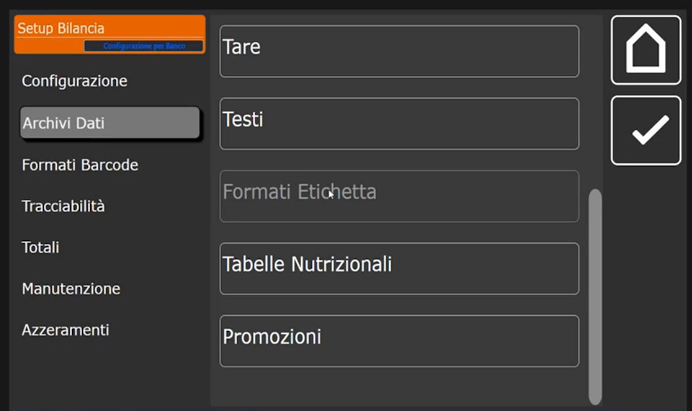
Intestazioni
L'intestazione personalizza lo scontrino con i dati del cliente. La bilancia può avere più intestazioni: è utile, per esempio, a chi etichetta per conto terzi. L'intestazione in uso si sceglie nel campo Intestazione Corrente della Configurazione Operativa, dove il valore di default è 1; in Multipesata e in Single Ticket può essere diversa.
Creare un'intestazione
- Tocca + e crea l'intestazione numero 1, quella collegata di default.
- Nel menu a sinistra tocca Dati Testa. I campi sono da Riga 1 (Testa) a Riga 4 (Testa) e Logo Testa.
-
Tocca Riga 1 (Testa) e scrivi il testo, per esempio CUSTOM: l'intestazione del cliente, con tutte le righe necessarie.
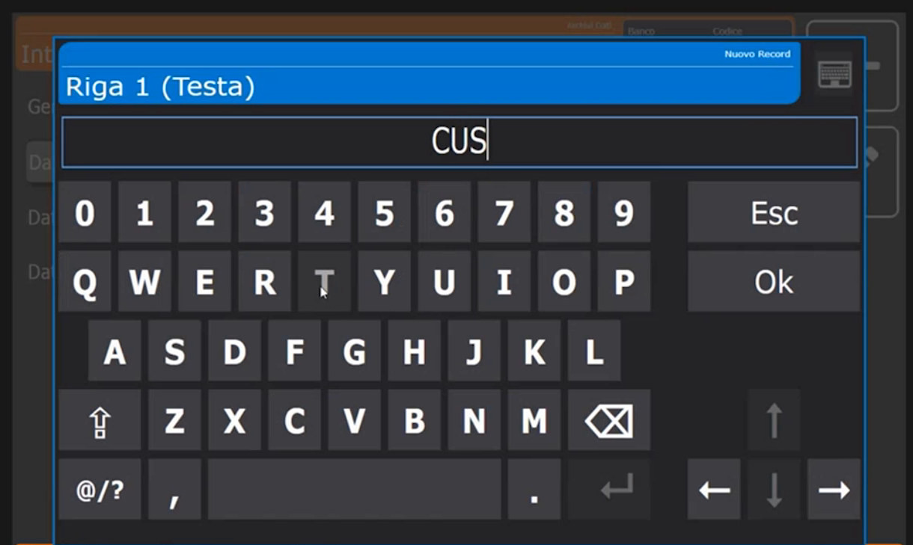
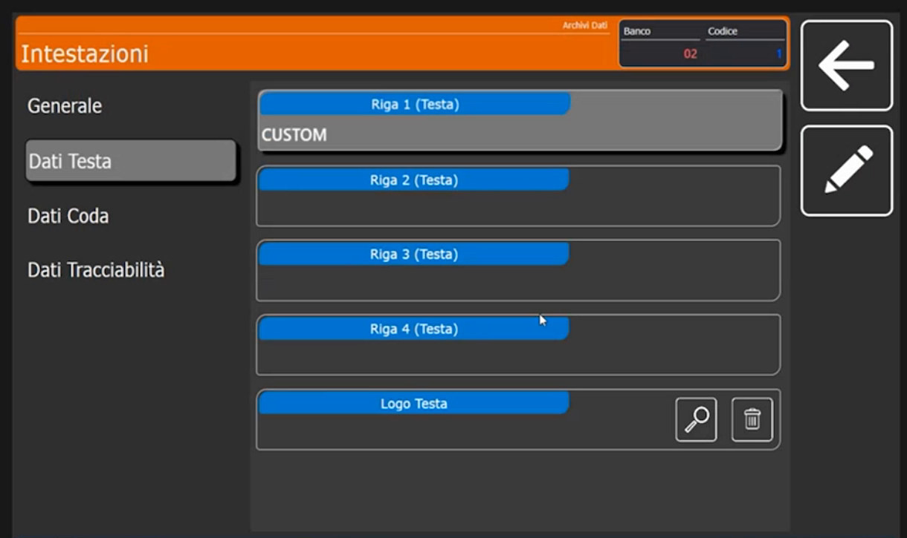
-
Logo in testa. Deve essere un file BMP monocromatico. Le dimensioni non devono essere necessariamente grandi: la bilancia lo adatta da sola.
- Dati Coda. Personalizza le righe di coda dello scontrino e permette di aggiungere un ulteriore logo in coda.
- Dati Tracciabilità. Personalizza ulteriori righe di coda legate alla tracciabilità, utili se il prodotto venduto è tracciabile (vedi Tracciabilità).
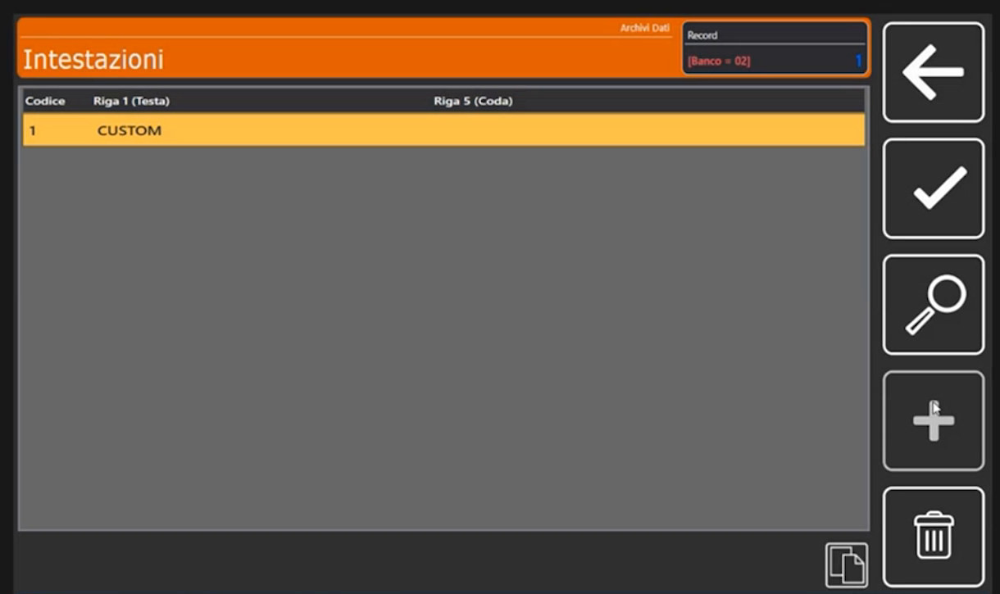
Dove si regola il layout
Le righe di testa e di coda sono i dati; la loro disposizione sullo scontrino dipende dai formati 50 (testa) e 51 (coda): vedi Formati Etichetta.
Operatori
Gli operatori sono le persone che usano la bilancia. Nella schermata di vendita compaiono come tasti operatore (V1, V2...) con il nome programmato.
Creare un operatore
- Tocca + e crea l'operatore numero 1.
-
Tocca Nome Operatore e scrivi il nome, per esempio SALVATORE.
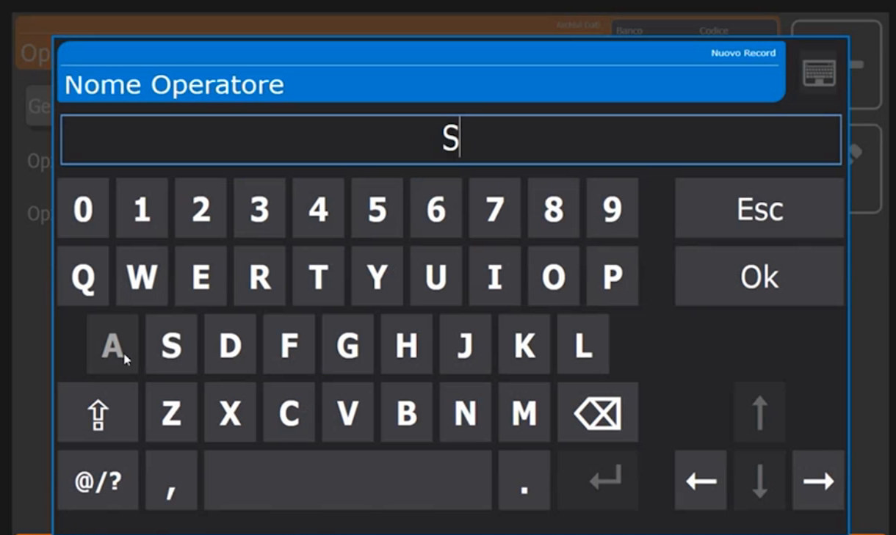
-
Nella scheda Generale trovi Codice Operatore, Nome Operatore, Operatore Abilitato (interruttore per abilitarlo o disabilitarlo), Modalità Single Ticket e Modalità Training.
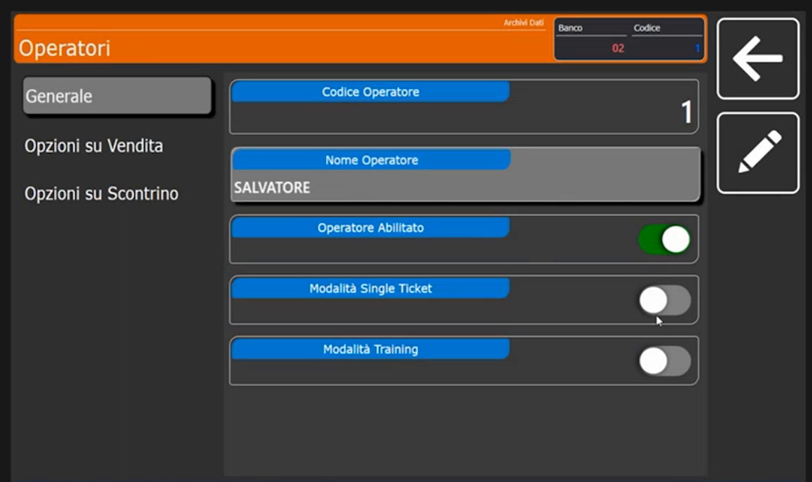
-
Modalità Single Ticket. Rende l'operatore un operatore in modalità single ticket: serve quando, lavorando in Multipesata, si vuole ottenere un'etichetta al volo. Gli operatori usati da Single Ticket ed Etichetta si indicano nella Configurazione Operativa (campi Operatore Single Ticket e Operatore Etichette).
-
Opzioni su Vendita e Opzioni su Scontrino (menu a sinistra). Permettono di concedere o negare all'operatore determinate operazioni. In Opzioni su Vendita gli interruttori sono Modifica Prezzi, Utilizzo Sconti, Utilizzo Resi, Vendite a Corpo e Vendite in Sottrazione, tutti attivi nell'esempio.
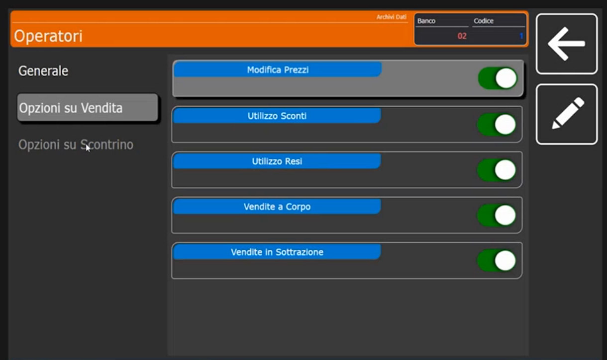
-
Crea gli altri operatori allo stesso modo, per esempio ANNA.
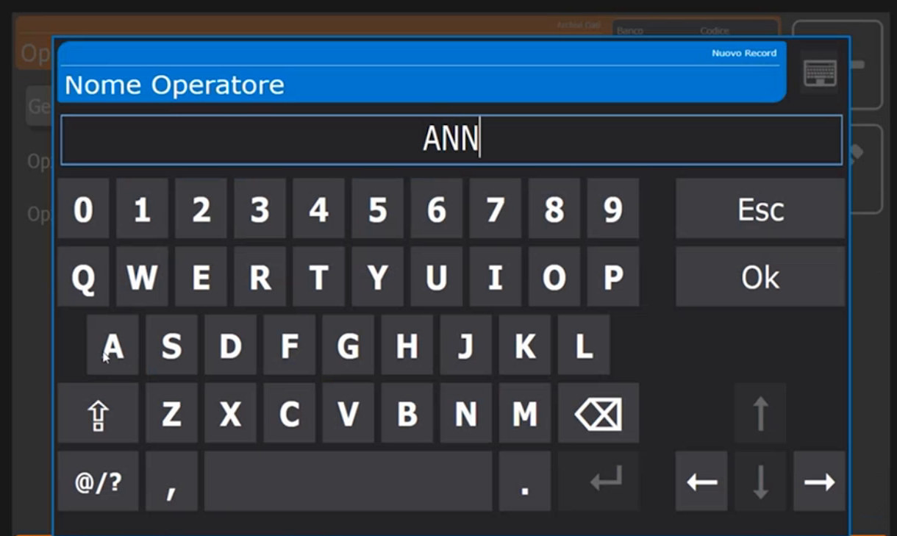
Nomi sui tasti
Il nome dell'operatore compare sul tasto operatore nella schermata di vendita. La bilancia adatta da sola la dimensione del testo al tasto.
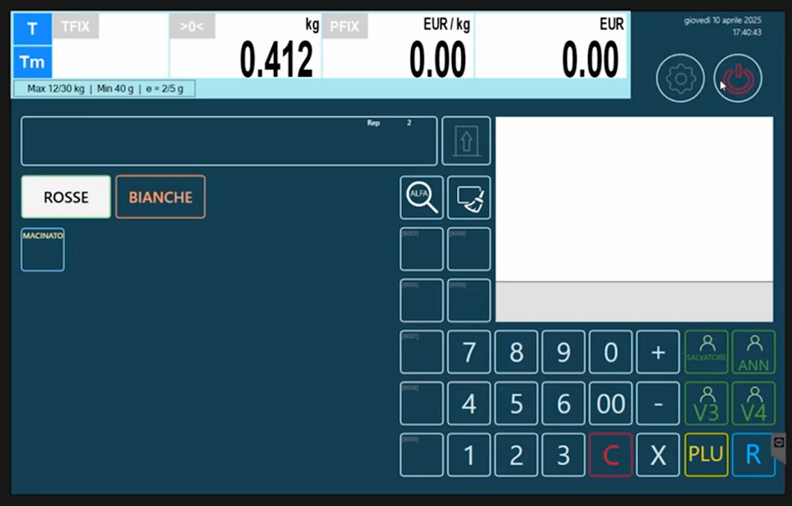
Testi
L'archivio Testi raccoglie testi già pronti che gli articoli possono richiamare (campi Puntatore Tabella Testi (1), (2) e (3) della scheda Testi dell'articolo, vedi Articoli PLU). Si scrive il testo una sola volta e lo si richiama dove serve: per esempio una frase di conservazione.
-
Tocca + e digita il Codice Testo 1.
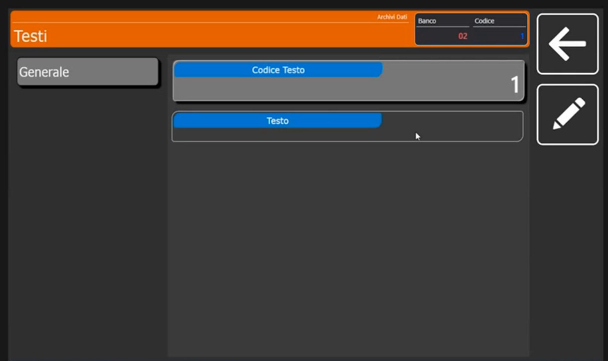
-
Tocca il campo Testo e scrivi il contenuto con la tastiera. Nell'esempio il testo è COTTO.
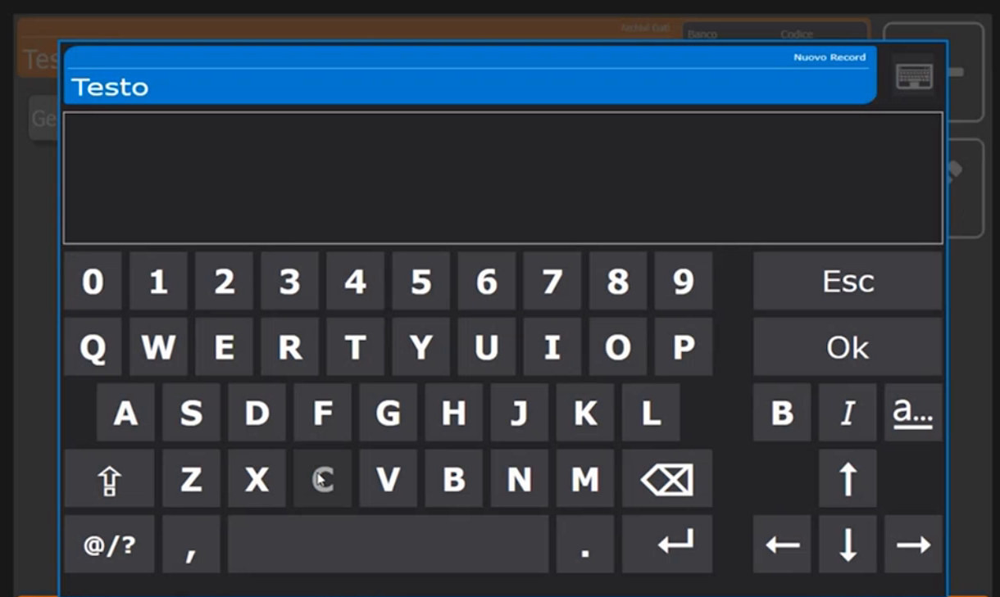
I testi per box ingredienti, allergeni e consigli d'uso si gestiscono in modo più ampio: vedi Box ingredienti e tabelle testi.
Verifica
L'archivio Testi mostra la riga 1 COTTO; l'archivio Operatori elenca gli operatori creati; l'archivio Intestazioni mostra la riga CUSTOM.
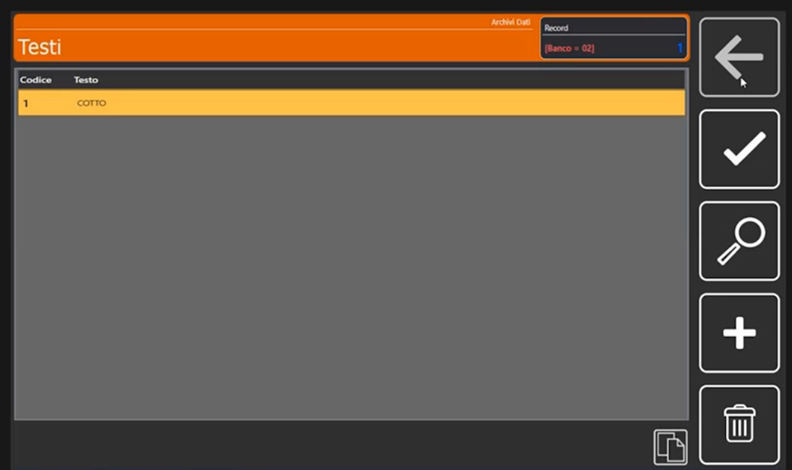
Errori comuni
| Problema | Causa probabile | Rimedio |
|---|---|---|
| Lo scontrino non riporta l'intestazione attesa | L'Intestazione Corrente nella Configurazione Operativa punta a un'altra intestazione | Controlla il numero indicato per la modalità in uso |
| L'operatore non può modificare un prezzo o applicare uno sconto | I permessi nelle Opzioni su Vendita sono disattivati | Attiva l'interruttore corrispondente nell'operatore |
Prossimo passo
Per disporre testa e coda sullo scontrino e costruire le etichette: Formati Etichetta.